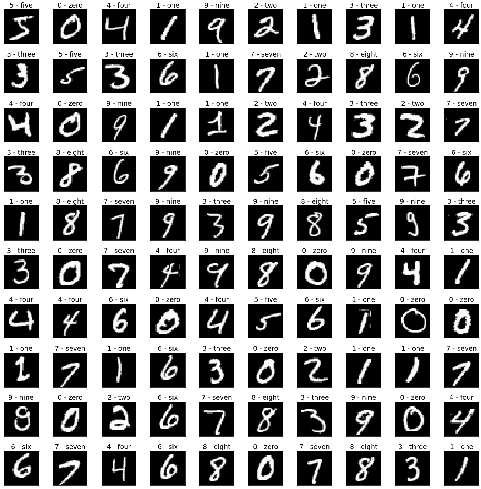

Нейронный сети
Contents
Нейронный сети#
Поддержка GPU#
import numpy as np
import torch
cpu = torch.device("cpu")
gpu = torch.device("cuda:0")
A = np.random.rand(10000, 10000)
B = np.random.rand(10000, 10000)
A_cpu = torch.Tensor(A)
B_cpu = torch.Tensor(B)
A_gpu = A_cpu.to(gpu)
B_gpu = B_cpu.to(gpu)
%%time
C = A @ B
CPU times: user 2min 9s, sys: 16.5 s, total: 2min 25s
Wall time: 4.59 s
%%time
C_cpu = A_cpu @ B_cpu
CPU times: user 35.5 s, sys: 3.57 s, total: 39.1 s
Wall time: 2.35 s
%%time
C_gpu = A_gpu @ B_gpu
CPU times: user 2.51 ms, sys: 0 ns, total: 2.51 ms
Wall time: 2.17 ms
Граф вычислений#
from matplotlib import pyplot as plt
plt.rcParams.update({"font.size": 16})
from torchviz import make_dot
def x_plus_one(x):
sinx = torch.sin(x)
cosx = torch.cos(x)
one = torch.sqrt(sinx*sinx + cosx*cosx)
expx = torch.exp(x)
x = torch.log(expx)
return x + one
x = torch.tensor(0., requires_grad=True)
y = x_plus_one(x)
make_dot(y)
X = np.linspace(-1, 1, 100)
def compute_derivative(f, x):
x = torch.tensor(x, requires_grad=True)
y = f(x)
y.backward()
return y.item(), x.grad.item()
dfdx = [compute_derivative(x_plus_one, x) for x in X]
fig, ax = plt.subplots(figsize=(10, 7))
ax.plot(X, dfdx)
ax.legend(["$f(x)$", r"$\dfrac{d f(x)}{dx}$"])
ax.set_xlabel("$x$")
ax.set_ylabel("$y$")
Text(0, 0.5, '$y$')

Оптимизация#
def rosen(x, y):
return (1 - x)**2 + 100*(y - x**2)**2
# initial value
x = torch.tensor(0., requires_grad=True)
y = torch.tensor(3., requires_grad=True)
# optimizer
optimizer = torch.optim.AdamW([x, y], lr=0.1)
trace = {"x": [], "y": [], "z": []}
# optimizing loop
for i in range(100):
# compute value
z = rosen(x, y)
# store for later
trace["x"].append(x.item())
trace["y"].append(y.item())
trace["z"].append(z.item())
# gradient descent step
optimizer.zero_grad()
z.backward()
optimizer.step()
n_points = 100
# surface
xh = np.linspace(-1.5, 2.0, n_points)
yh = np.linspace(-0.3, 3, n_points)
xv, yv = np.meshgrid(xh, yh)
zv = rosen(xv.reshape(-1), yv.reshape(-1)).reshape(n_points, n_points)
surface = {"x": xv, "y": yv, "z": zv}
levels = np.hstack([np.linspace(0, 200, 25), np.linspace(250, 2000, 25)])
fig, ax = plt.subplots(figsize=(11, 10))
cf = ax.contourf(surface["x"], surface["y"], surface["z"], levels=levels, cmap="coolwarm")
ax.plot(trace["x"], trace["y"], "r", label="path")
ax.scatter(trace["x"][0], trace["y"][0], marker="s", s=200, color="violet", label="start")
ax.scatter([1], [1], marker="*", s=200, color="violet", label="minimum")
cbar = fig.colorbar(cf)
ax.set_xlabel("$x$")
ax.set_ylabel("$y$")
cbar.set_label("$z$")
ax.legend()
<matplotlib.legend.Legend at 0x7f2b70bcdc40>

def show_image(ax, image, title=None, cmap=None):
"""
Вывести изображение в указанных осях.
"""
ax.imshow(image, cmap=cmap)
ax.set_title(title)
ax.xaxis.set_visible(False)
ax.yaxis.set_visible(False)
MNIST#
from torchvision.datasets import MNIST
train_dataset = MNIST("./datasets", download=True, train=True)
test_dataset = MNIST("./datasets", download=True, train=False)
fig, axs = plt.subplots(figsize=(20, 20), nrows=10, ncols=10, layout="tight")
for i, ax in enumerate(axs.flatten()):
image = train_dataset.data[i].numpy()
label = train_dataset.targets[i].item()
digit = train_dataset.classes[label]
show_image(ax, image, title=digit, cmap="gray")

from sklearn.neighbors import KNeighborsClassifier
X_train = train_dataset.data.flatten(start_dim=1).numpy()
Y_train = train_dataset.targets.numpy()
X_test = test_dataset.data.flatten(start_dim=1).numpy()
Y_test = test_dataset.targets.numpy()
classifier = KNeighborsClassifier()
classifier.fit(X_train, Y_train)
accuracy = classifier.score(X_test, Y_test)
print(f"k nearest neighboors accuracy: {accuracy}")
k nearest neighboors accuracy: 0.9688
from torchvision.transforms import Compose, ToTensor, Normalize
from torch.utils.data import DataLoader
data = train_dataset.data / 255.
mean = data.mean()
std = data.std()
transform = Compose([
ToTensor(),
Normalize((mean,), (std,))
])
train_dataset.transform = transform
test_dataset.transform = transform
train_dataloader = DataLoader(train_dataset, batch_size=1024, shuffle=True, pin_memory=True)
test_dataloader = DataLoader(test_dataset, batch_size=1024, shuffle=False, pin_memory=True)
from torch.nn import CrossEntropyLoss
from sklearn.metrics import accuracy_score
from tqdm.notebook import trange
device = gpu if torch.cuda.is_available() else cpu
optimizer_type = torch.optim.Adam
def train_one_epoch(model, dataloader, optimizer):
CSE = CrossEntropyLoss()
for x, y_true in dataloader:
# Compute prediction and loss
x, y_true = x.to(device), y_true.to(device)
y_pred = model(x)
loss = CSE(y_pred, y_true)
# Backpropagation
optimizer.zero_grad()
loss.backward()
optimizer.step()
def train(model, train_loader, test_loader, n_epochs, writer, lr=0.001):
optimizer = optimizer_type(model.parameters(), lr=lr)
model = model.to(device)
# validate
model.eval()
train_loss, train_acc = compute_metrics(model, train_loader)
test_loss, test_acc = compute_metrics(model, test_loader)
write_logs(writer, train_loss, test_loss, train_acc, test_acc, 0)
# train loop
for epoch in trange(1, n_epochs + 1):
# train
model.train()
train_one_epoch(model, train_loader, optimizer)
# validate
model.eval()
train_loss, train_acc = compute_metrics(model, train_loader)
test_loss, test_acc = compute_metrics(model, test_loader)
# write to tensorboard logs
write_logs(writer, train_loss, test_loss, train_acc, test_acc, epoch)
return test_acc
def write_logs(writer, train_loss, test_loss, train_acc, test_acc, epoch):
writer.add_scalars(
"accuracy",
{
"train": train_acc,
"test": test_acc
},
epoch
)
writer.add_scalars(
"loss",
{
"train": train_loss,
"test": test_loss
},
epoch
)
def compute_metrics(model, dataloader):
CSE = CrossEntropyLoss(reduction="sum")
n = len(dataloader.dataset)
loss = 0.
correct = 0.
with torch.no_grad():
for x, y_true in dataloader:
x, y_true = x.to(device), y_true.to(device)
y_pred = model(x)
loss += CSE(y_pred, y_true)
correct += accuracy_score(y_true.cpu().numpy(), y_pred.argmax(1).cpu().numpy(), normalize=False)
return loss/n, correct/n
import os
from torch.nn import Sequential, Flatten, Linear
from torch.utils.tensorboard import SummaryWriter
h, w = 28, 28
n_pixels = h * w
n_classes = 10
learning_rate = 0.03
n_epochs = 20
linear = Sequential(
Flatten(),
Linear(in_features=n_pixels, out_features=n_classes, bias=True)
)
folder = os.path.join("runs", "MNIST", "linear")
train(linear, train_dataloader, test_dataloader, n_epochs, SummaryWriter(folder), learning_rate)
0.901
weights = list(linear.parameters())[0].to(cpu).detach().numpy()
fig, axs = plt.subplots(figsize=(20, 20), ncols=10, layout="tight")
for row, ax, title in zip(weights, axs, train_dataset.classes):
image = row.reshape(h, w)
show_image(ax, image, title=title, cmap="gray")

from torch.nn import ReLU
two_layers = Sequential(
Flatten(),
Linear(in_features=n_pixels, out_features=40, bias=True),
ReLU(),
Linear(in_features=40, out_features=n_classes, bias=True)
)
folder = os.path.join("runs", "MNIST", "two_layers")
train(two_layers, train_dataloader, test_dataloader, n_epochs, SummaryWriter(folder), learning_rate)
0.953
weights = list(two_layers.parameters())[0].to(cpu).detach().numpy()
fig, axs = plt.subplots(figsize=(20, 8), ncols=10, nrows=4, layout="tight")
for row, ax in zip(weights, axs.flatten()):
image = row.reshape(h, w)
show_image(ax, image, cmap="gray")
from torch.nn import Conv2d, MaxPool2d
lenet = Sequential(
Conv2d(in_channels=1, out_channels=6, kernel_size=(5, 5), padding=2),
ReLU(),
MaxPool2d(kernel_size=(2, 2), stride=(2, 2)),
Conv2d(in_channels=6, out_channels=16, kernel_size=(5, 5)),
ReLU(),
MaxPool2d(kernel_size=(2, 2), stride=(2, 2)),
Flatten(),
Linear(in_features=400, out_features=120),
ReLU(),
Linear(in_features=120, out_features=84),
ReLU(),
Linear(in_features=84, out_features=10)
)
folder = os.path.join("runs", "MNIST", "Convolutional")
train(lenet, train_dataloader, test_dataloader, n_epochs, SummaryWriter(folder), lr=0.003)
0.9876
weights = next(lenet.parameters()).to(cpu).detach().numpy()
fig, axs = plt.subplots(figsize=(20, 6), ncols=6, layout="tight")
for row, ax in zip(weights, axs.flatten()):
image = row.reshape(5, 5)
show_image(ax, image, cmap="gray")

CIFAR10#
from torchvision.datasets import CIFAR10
train_dataset = CIFAR10("./datasets", download=True, train=True)
test_dataset = CIFAR10("./datasets", download=True, train=False)
fig, axs = plt.subplots(figsize=(20, 20), nrows=6, ncols=6, layout="tight")
for i, ax in enumerate(axs.flatten()):
image = train_dataset.data[i]
label = train_dataset.targets[i]
digit = train_dataset.classes[label]
show_image(ax, image, title=digit)
Files already downloaded and verified
Files already downloaded and verified
h, w, c = 32, 32, 3
n_pixels = h * w * c
n_classes = 10
n_epochs = 20
X_train = train_dataset.data.reshape(-1, n_pixels)
Y_train = train_dataset.targets
X_test = test_dataset.data.reshape(-1, n_pixels)
Y_test = test_dataset.targets
classifier = KNeighborsClassifier()
classifier.fit(X_train, Y_train)
accuracy = classifier.score(X_test, Y_test)
print(f"k nearest neighboors accuracy: {accuracy}")
k nearest neighboors accuracy: 0.3398
data = train_dataset.data / 255.
mean = data.mean(axis=(0, 1, 2))
std = data.std(axis=(0, 1, 2))
transform = Compose([
ToTensor(),
Normalize(tuple(mean), tuple(std))
])
train_dataset = CIFAR10("./datasets", download=True, train=True, transform=transform)
test_dataset = CIFAR10("./datasets", download=True, train=False, transform=transform)
train_dataloader = DataLoader(train_dataset, batch_size=256, shuffle=True, pin_memory=True)
test_dataloader = DataLoader(test_dataset, batch_size=256, shuffle=False, pin_memory=True)
Files already downloaded and verified
Files already downloaded and verified
optimizer_type = torch.optim.SGD
linear = Sequential(
Flatten(),
Linear(in_features=n_pixels, out_features=n_classes)
)
learning_rate = 0.1
folder = os.path.join("runs", "CIFAR10", "linear")
accuracy = train(linear, train_dataloader, test_dataloader, n_epochs, SummaryWriter(folder), learning_rate)
print(f"accuracy of logistic regression: {accuracy}")
accuracy of logistic regression: 0.2574
three_layers = Sequential(
Flatten(),
Linear(in_features=n_pixels, out_features=120),
ReLU(),
Linear(in_features=120, out_features=86),
ReLU(),
Linear(in_features=86, out_features=n_classes)
)
folder = os.path.join("runs", "CIFAR10", "three_layers")
accuracy = train(three_layers, train_dataloader, test_dataloader, n_epochs, SummaryWriter(folder), learning_rate)
print(f"accuracy of three layered model: {accuracy}")
accuracy of three layered model: 0.5028
from torch.nn import Conv2d, MaxPool2d
lenet = Sequential(
Conv2d(in_channels=3, out_channels=6, kernel_size=(5, 5)),
ReLU(),
MaxPool2d(kernel_size=(2, 2), stride=(2, 2)),
Conv2d(in_channels=6, out_channels=16, kernel_size=(5, 5)),
ReLU(),
MaxPool2d(kernel_size=(2, 2), stride=(2, 2)),
Flatten(),
Linear(in_features=400, out_features=120),
ReLU(),
Linear(in_features=120, out_features=84),
ReLU(),
Linear(in_features=84, out_features=10)
)
folder = os.path.join("runs", "CIFAR10", "Convolutional")
accuracy = train(lenet, train_dataloader, test_dataloader, n_epochs, SummaryWriter(folder), lr=0.1)
print(f"accuracy of convolutional model: {accuracy}")
accuracy of convolutional model: 0.5697
def compute_number_of_paramets(model):
return sum(parameters.cpu().detach().numpy().size for parameters in model.parameters())
models = {
"linear": linear,
"three layers": three_layers,
"convolutional": lenet
}
for model_name, model in models.items():
n = compute_number_of_paramets(model)
print(f"{model_name}: {n}")
linear: 30730
three layers: 380036
convolutional: 62006